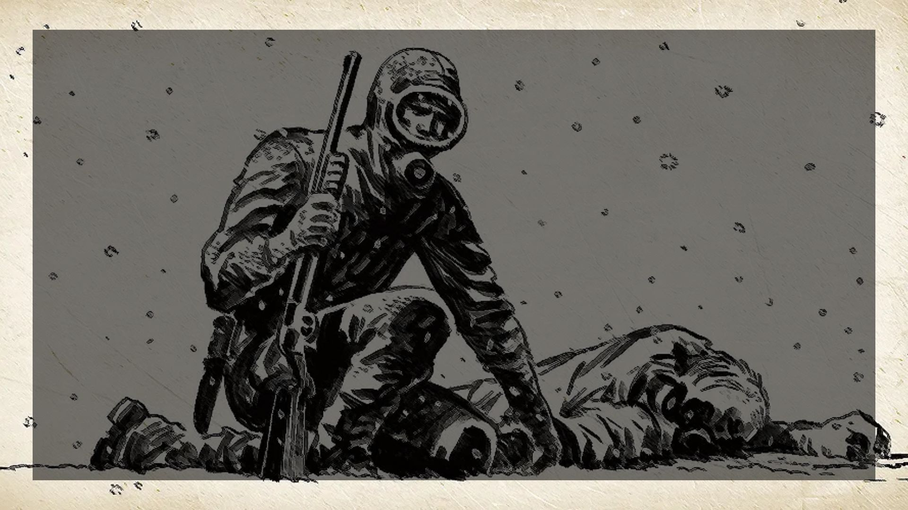
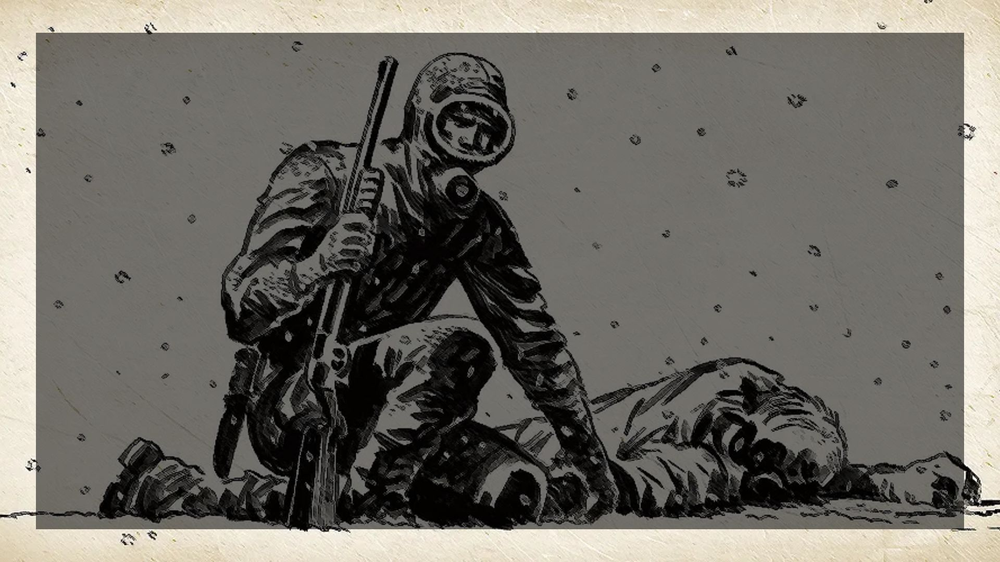

La Historieta

Lectura obligatoria para abordar el género: El Eternauta (1957-1959), de Héctor Germán Oesterheld.

Lectura obligatoria para abordar el género: El Eternauta (1957-1959), de Héctor Germán Oesterheld.
Luego de haber leído los primeros capítulos de la historieta:
Actividad de escritura
Adaptá El árbol de la buena muerte como una historieta breve.
La misma deberá incluir:
Podés:
La historieta —también conocida como cómic o novela gráfica— es un tipo de narración secuencial que fusiona imágenes y texto para contar una historia. Se estructura a través de viñetas, que son recuadros donde se representan escenas concretas, combinando lenguaje icónico (imágenes) y verbal (diálogos, pensamientos, cartelas).
Cada viñeta muestra un momento significativo; el espacio entre ellas, conocido como “calle” o gutter, implica una transición que el lector debe completar mentalmente. De este modo, la historieta construye su trama a través de estas unidades visuales que se enlazan para formar una narrativa coherente con inicio, nudo y desenlace.
En su estructura, una historieta integra varios elementos esenciales:
Este lenguaje mixto permite una economía expresiva donde la interacción entre imagen y texto genera riqueza comunicativa e invita al lector a participar activamente. Cada dibujo aporta significado, y el texto complementa o matiza lo que está en la imagen.
El narrador en off —a través de cartelas— es fundamental para introducir información, señalar el tiempo o expresar la perspectiva narrativa, actuando como un mediador entre la imagen y la interpretación del lector. Por su parte, los diálogos, en forma de bocadillos, suelen emplear registros vocativos o imperativos breves, buscando efectos expresivos y dinamismo.
La historieta se lee siguiendo convenciones culturales, como el recorrido de izquierda a derecha y de arriba abajo. Además, juega con distintos ángulos de plano (primer plano, plano general, entre otros) y formas artísticas para reflejar emociones, resaltar acciones o crear atmósfera.
En términos de género, la historieta es muy versátil: abarca ficción, humor, terror, aventuras, periodismo gráfico y géneros híbridos como la novela gráfica. Su brevedad (tira cómica) o extensión (serie, tomo) depende del formato, pero siempre se sostiene en la secuencia narrativa visual.
En las últimas décadas, la historieta se consolidó también como herramienta para la no ficción y la memoria histórica, incluyendo géneros como el reportaje gráfico, el ensayo visual y la biografía ilustrada, sumando profundidad emocional a través de su poder visual.
En las siguientes páginas pueden ampliar y/o reforzar sus conocimientos sobre el género Historieta:
https://lenguaje.com/historieta/
https://www.kedin.es/que-es-una-historieta/
Obra publicada con Licencia Creative Commons Reconocimiento Compartir igual 4.0